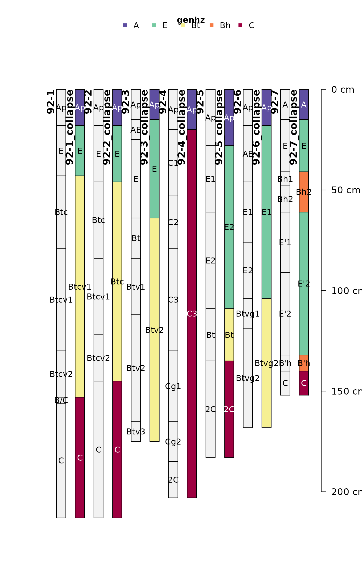
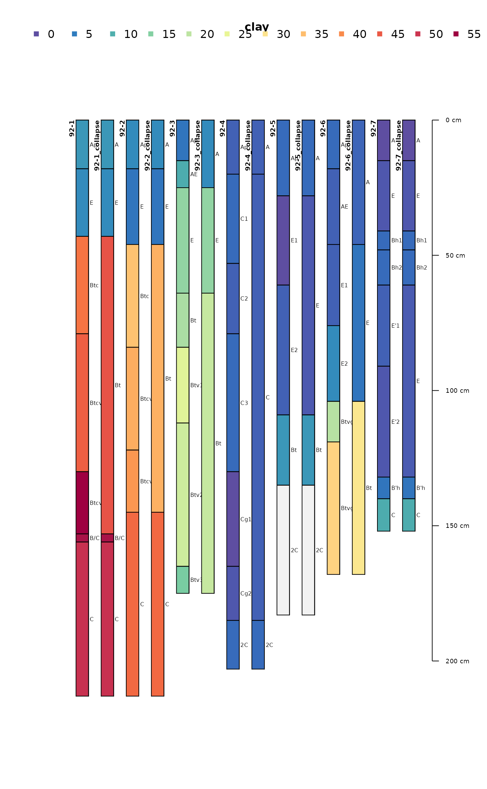

Combines layers and aggregates data by grouping adjacent horizons which match pattern in
hzdesgn or, alternately, share a common value in by argument. Numeric properties are combined
using the weighted average, and other properties are derived from the dominant condition based on
thickness of layers and values in each group.
Usage
collapseHz(
x,
pattern = NULL,
by = NULL,
hzdesgn = hzdesgnname(x, required = TRUE),
FUN = function(x, pattern, hzdesgn, ...) grepl(pattern, x[[hzdesgn]], ignore.case =
FALSE),
...,
AGGFUN = NULL,
ignore_numerics = NULL,
na.rm = FALSE
)Arguments
- x
A SoilProfileCollection
- pattern
character. A regular expression pattern to match in
hzdesgncolumn. Default:NULL.- by
character. A column name specifying horizons that should be combined. Aggregation will be applied to adjacent groups of layers within profiles that have the same value in
by. Used in lieu ofpatternandhzdesgn. Default:NULL.- hzdesgn
character. Any character column containing horizon-level identifiers. Default:
hzdesgnname(x, required = TRUE).- FUN
function. A function that returns a logical vector equal in length to the number of horizons in
x. Used only whenpatternis specified. See details.- ...
Additional arguments passed to the matching function
FUN.- AGGFUN
list. A named list containing custom aggregation functions. List element names should match the column name that they transform. The functions defined should take three arguments:
x(a vector of horizon property values),top(a vector of top depths), andbottom(a vector of bottom depths). Default:NULLappliesweighted.mean()to all numeric columns not listed inignore_numericsand takes the dominant condition (value with greatest aggregate thickness sum) for all other columns. See details.- ignore_numerics
character. Vector of column names that contain numeric values which should not be aggregated using
weighted.mean(). For example, soil color "value" and "chroma".- na.rm
logical. If
TRUENAvalues are ignored when calculating min/max boundaries for each group and in weighted averages. IfFALSENAvalues are propagated to the result. Default:FALSE.
Details
If a custom matching function (FUN) is used, it should accept arbitrary additional arguments
via an ellipsis (...). It is not necessary to do anything with arguments, but the result should
match the number of horizons found in the input SoilProfileCollection x.
Custom aggregation functions defined in the AGGFUN argument should either return a single
vector value for each group*column combination, or should return a data.frame object with named
columns. If the input column name is used as a column name in the result data.frame, then the
values of that column name in the result SoilProfileCollection will be replaced by the output
of the aggregation function. See examples.
Examples
data(jacobs2000)
# calculate a new SPC with genhz column based on patterns
new_labels <- c("A", "E", "Bt", "Bh", "C")
patterns <- c("A", "E", "B.*t", "B.*h", "C")
jacobs2000_gen <- generalizeHz(jacobs2000, new = new_labels, pattern = patterns)
# use existing generalized horizon labels
i <- collapseHz(jacobs2000_gen, by = "genhz")
profile_id(i) <- paste0(profile_id(i), "_collapse")
plot(
c(i, jacobs2000),
color = "genhz",
name = "name",
name.style = "center-center",
cex.names = 1
)

# custom pattern argument
j <- collapseHz(jacobs2000,
c(
`A` = "^A",
`E` = "E",
`Bt` = "[ABC]+t",
`C` = "^C",
`foo` = "bar"
))
profile_id(j) <- paste0(profile_id(j), "_collapse")
plot(c(j, jacobs2000), color = "clay")

# custom aggregation function for matrix_color_munsell
k <- collapseHz(jacobs2000,
pattern = c(
`A` = "^A",
`E` = "E",
`Bt` = "[ABC]+t",
`C` = "^C",
`foo` = "bar"
),
AGGFUN = list(
matrix_color_munsell = function(x, top, bottom) {
thk <- bottom - top
if (length(x) > 1) {
xord <- order(thk, decreasing = TRUE)
paste0(paste0(x[xord], " (t=", thk[xord], ")"), collapse = ", ")
} else
x
}
)
)
profile_id(k) <- paste0(profile_id(k), "_collapse_custom")
unique(k$matrix_color_munsell)
#> [1] "10YR 4/1"
#> [2] "2.5Y 6/6"
#> [3] "10YR 6/8 (t=51), 10YR 5/8 (t=36), 10YR 6/8 (t=23)"
#> [4] NA
#> [5] "2.5YR 4/8"
#> [6] "10YR 2/2"
#> [7] "10YR 6/4"
#> [8] "10YR 5/8 (t=38), 10YR 6/8 (t=38), 10YR 6/8 (t=23)"
#> [9] "10YR 4/2 (t=15), 10YR 5/2 (t=10)"
#> [10] "10YR 7/4"
#> [11] "10YR 6/4 (t=53), 10YR 6/4 (t=28), 2.5Y 6/6 (t=20), 10YR 7/2 (t=10)"
#> [12] "10YR 5/1"
#> [13] "10YR 7/4 (t=51), 10YR 8/1 (t=35), 10YR 6/4 (t=33), 10YR 7/4 (t=26), 2.5Y 8/2 (t=20)"
#> [14] "10YR 7/2"
#> [15] "10YR 5/2"
#> [16] "2.5Y 7/3 (t=48), 2.5Y 7/4 (t=33)"
#> [17] "10YR 6/6"
#> [18] "10YR 4/6"
#> [19] "2.5Y 6/3 (t=28), 10YR 5/1 (t=18)"
#> [20] "2.5Y 7/3 (t=30), 2.5Y 6/3 (t=28)"
#> [21] "10YR 7/1 (t=49), 10YR 7/2 (t=15)"
#> [22] "10YR 8/1"
#> [23] "7.5YR 3/2"
#> [24] "10YR 3/2"
#> [25] "10YR 7/2 (t=41), 10YR 6/3 (t=30)"
#> [26] "10YR 2/1"
#> [27] "10YR 6/1"
# custom aggregation function for matrix_color_munsell (returns data.frame)
m <- collapseHz(jacobs2000,
pattern = c(
`A` = "^A",
`E` = "E",
`Bt` = "[ABC]+t",
`C` = "^C",
`foo` = "bar"
),
AGGFUN = list(
matrix_color_munsell = function(x, top, bottom) {
thk <- bottom - top
if (length(x) > 1) {
xord <- order(thk, decreasing = TRUE)
data.frame(matrix_color_munsell = paste0(x, collapse = ";"),
n_matrix_color = length(x))
} else {
data.frame(matrix_color_munsell = x,
n_matrix_color = length(x))
}
}
)
)
profile_id(m) <- paste0(profile_id(m), "_collapse_custom")
m$matrix_color_munsell.n_matrix_color
#> [1] NA NA "4" NA NA NA NA "10" NA "2" NA "19" NA "24" NA
#> [16] NA "30" NA NA "2" "35" "38" NA NA NA NA "44" NA NA